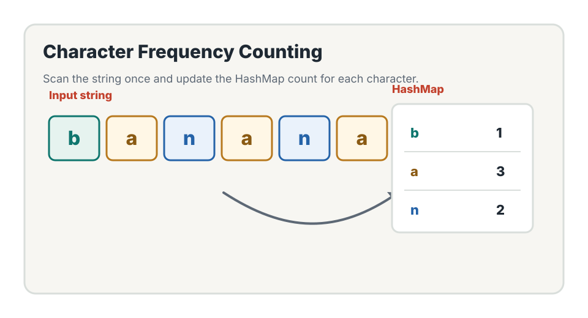
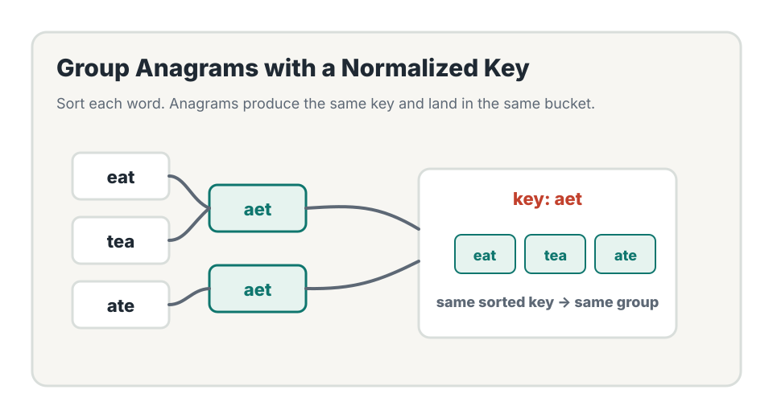
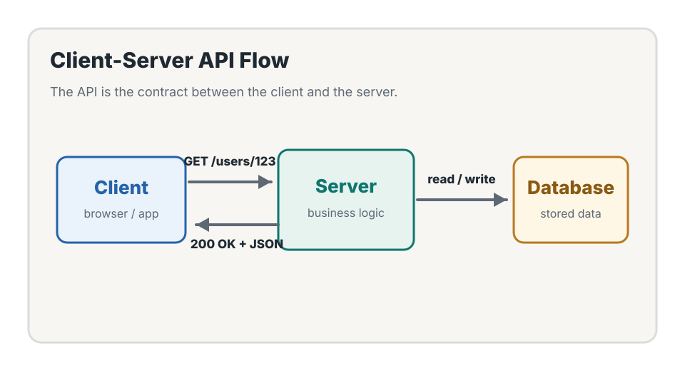
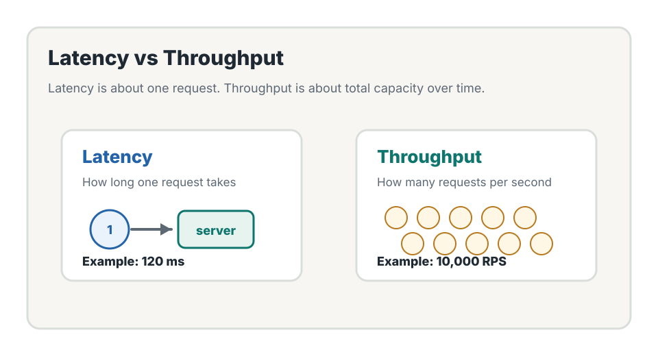

Frequency Map Visual

Amazon Web Services SDE Prep
Today's goal is to learn character frequency counting with HashMaps, solve anagram problems, and understand the basic system design language of clients, servers, APIs, latency, and throughput.
Concepts
Frequency counting means scanning a string and storing how many times each character appears. It is one of the most common HashMap patterns for string interview problems.

count = {}
for ch in s:
count[ch] = count.get(ch, 0) + 1
The character is the key. The number of times it appears is the
value. get(ch, 0) means "use 0 if this character has
not appeared before."
Use frequency counting when a problem asks whether two strings have the same characters, whether counts match, or whether strings can be grouped by shared character composition.
Day 1 used HashMap or Set to answer "Have I seen this value before?" Day 2 uses HashMap to answer "How many times have I seen this character?"
LeetCode 1
Two strings are anagrams if they contain the same characters with the same counts.
def is_anagram(s, t):
if len(s) != len(t):
return False
count = {}
for ch in s:
count[ch] = count.get(ch, 0) + 1
for ch in t:
if ch not in count:
return False
count[ch] -= 1
if count[ch] < 0:
return False
return True
We first count characters in s, then subtract
characters from t. If any count becomes negative or a
character is missing, the strings are not anagrams.
LeetCode 2
The core idea is to convert each word into a normalized key. Anagrams share the same key.

from collections import defaultdict
def group_anagrams(strs):
groups = defaultdict(list)
for word in strs:
key = ''.join(sorted(word))
groups[key].append(word)
return list(groups.values())
Let n be the number of words and k be the
average word length. Sorting each word costs
O(k log k), so the total time is
O(n * k log k).
"I normalize each word by sorting its characters. Since anagrams produce the same sorted string, I can use that sorted string as a HashMap key and append each word to the corresponding group."
System Design Basics
System design starts by defining communication boundaries: who sends the request, who handles it, what the API contract is, and how performance is measured.


An API is a contract that defines how clients interact with a system. It includes endpoints, HTTP methods, request data, response data, and error behavior.
GET /users/123/profile
200 OK
{
"userId": "123",
"name": "Alex",
"bio": "Backend developer"
}Latency is how long one request takes. Throughput is how many requests a system can process per unit of time, often measured in requests per second.
Must-Memorize Q&A
Practice these answers until they sound natural. They are short on purpose because interview explanations should be clear and direct.
Frequency counting is a pattern where we use a HashMap to store how many times each value, usually a character, appears.
Use it when a problem asks about matching counts, duplicate counts, character composition, or whether two strings contain the same characters.
count.get(ch, 0) + 1 mean?
It means get the current count for ch, use 0 if the
character has not appeared before, then add 1.
Two strings are anagrams if they contain the same characters with the same frequency, possibly in a different order.
Count characters in the first string, subtract characters from the second string, and return false if a character is missing or a count becomes negative.
Normalize each word into a key, such as its sorted characters, and use that key to group words in a HashMap.
An API is a contract that defines how clients communicate with a system, including endpoints, methods, request data, response data, and error behavior.
Latency measures how long one request takes. Throughput measures how many requests the system can handle over time.
Review
If you can explain each item below, Day 2 is complete. Your checked items are saved in this browser.
When a string problem asks whether characters match by count, think frequency map.